Trends
EMSE 4572/6572: Exploratory Data Analysis
John Paul Helveston
October 28, 2026
Quiz 3
Write your name on the quiz!
Rules:
- Work alone; no outside help of any kind is allowed.
- No calculators, no notes, no books, no computers, no phones.

Today’s data
Seen before:
gapminder <- read_csv(file.path('data', 'gapminder.csv'))
milk_production <- read_csv(file.path('data', 'milk_production.csv'))
global_temps <- read_csv(file.path('data', 'nasa_global_temps.csv'))
internet_region <- read_csv(file.path('data', 'internet_users_region.csv'))
hotdogs <- read_csv(file.path('data', 'hot_dog_winners.csv'))
internet_country <- read_csv(file.path('data', 'internet_users_country.csv'))New datasets:
New packages:
Week 10: Trends
1. Single Variables
2. Animations
3. Multiple Variables
Week 10: Trends
1. Single Variables
2. Animations
3. Multiple Variables
Points
Plotting the data points is a good starting point for viewing trends
Points + line
Adding lines between the points helps
see the overall trend
Line
Omitting the points emphasizes the overall trend
Line + area
Filling area below line emphasizes cumulative over time
(y-axis should start at 0)
If points are too sparse, a line can be misleading
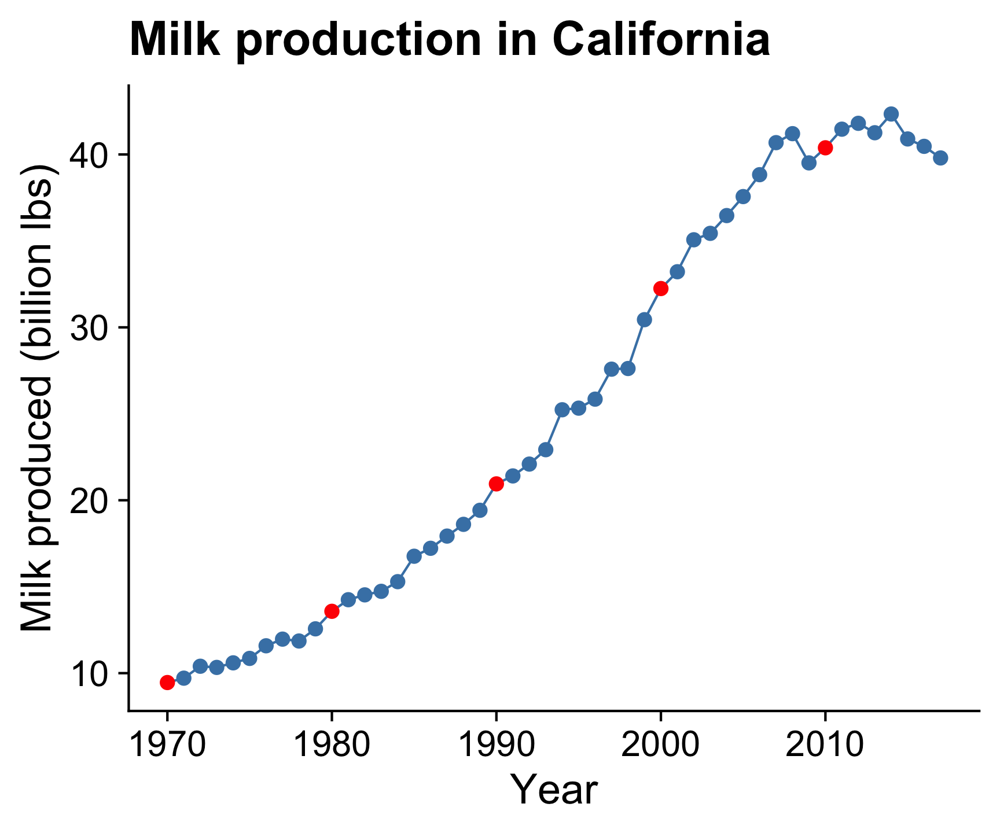
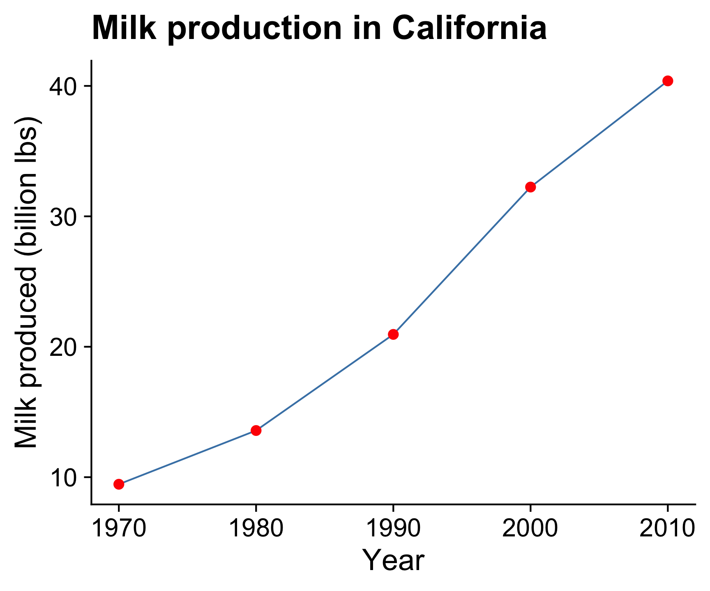
Smoothed line
Adding a “smoothed” line shows a modeled representation of the overall trend
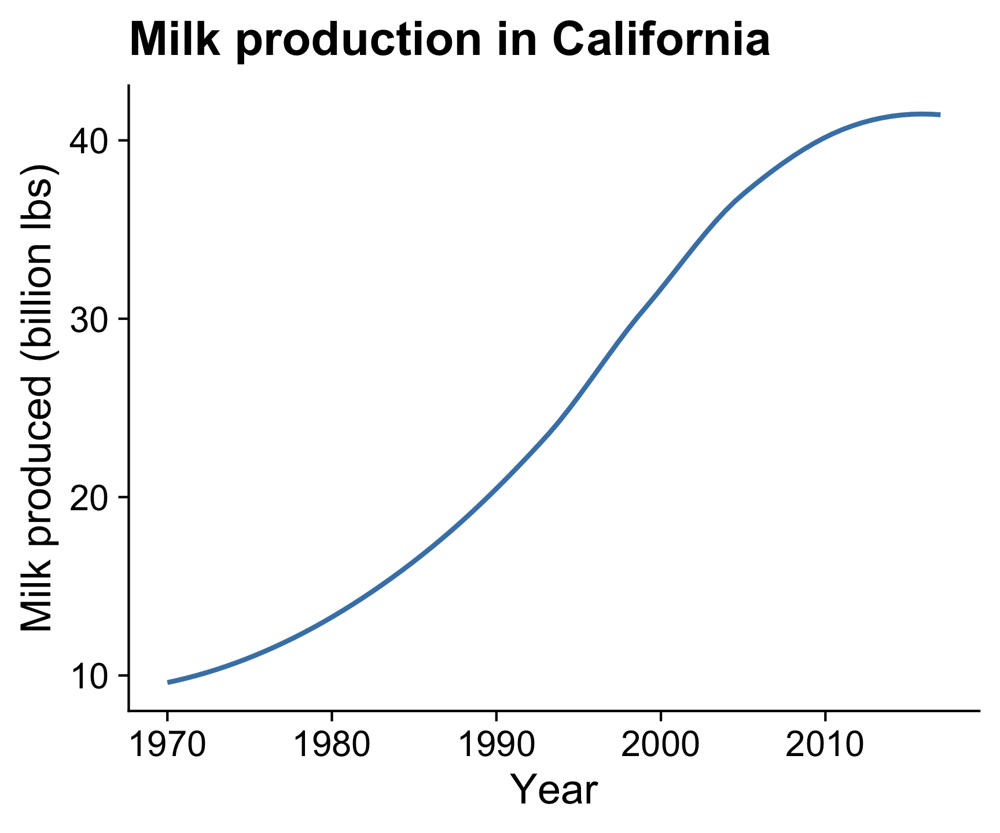
Smoothed line + points
Putting the smoothed line over the data points helps show whether outliers are driving the trend line
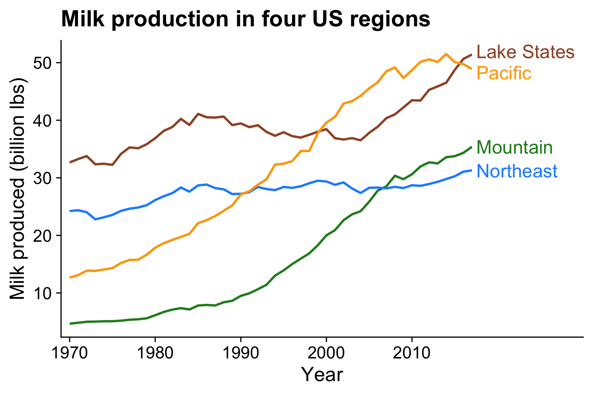
Bars are useful when emphasizing the data points
rather than the slope between them
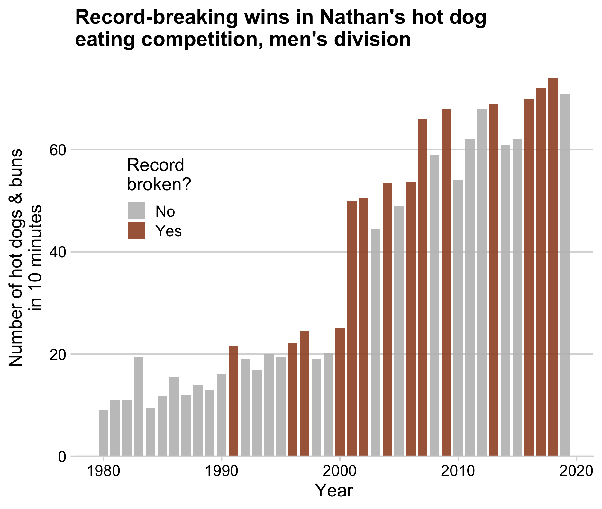
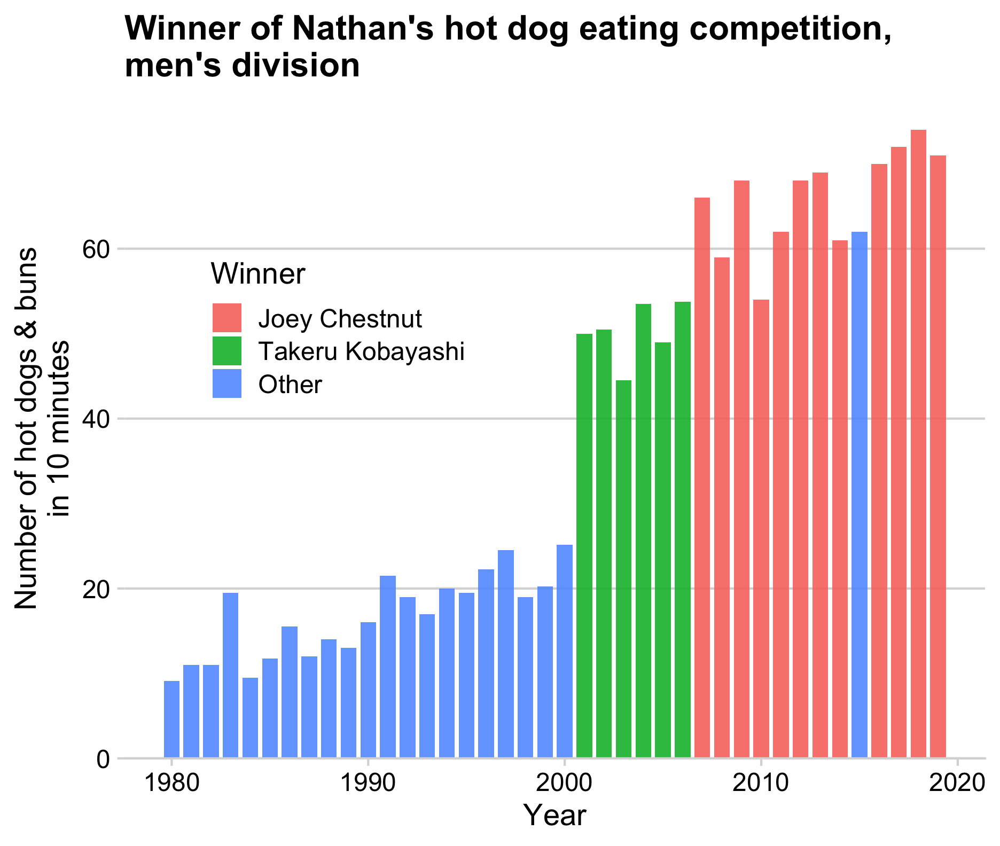
How to: Points + line
Be sure to draw the line first,
then overlay the points
How to: Line + area
Likewise, draw the area first then overlay the line
ggplot(milk_ca,
aes(x = year, y = milk_produced)) +
geom_area(fill = 'steelblue', alpha = 0.5) +
geom_line(color = 'steelblue', size = 1) +
scale_y_continuous(
expand = expansion(mult = c(0, 0.05))) +
theme_half_open(font_size = 18) +
labs(x = 'Year',
y = 'Milk produced (billion lbs)',
title = 'Milk production in California')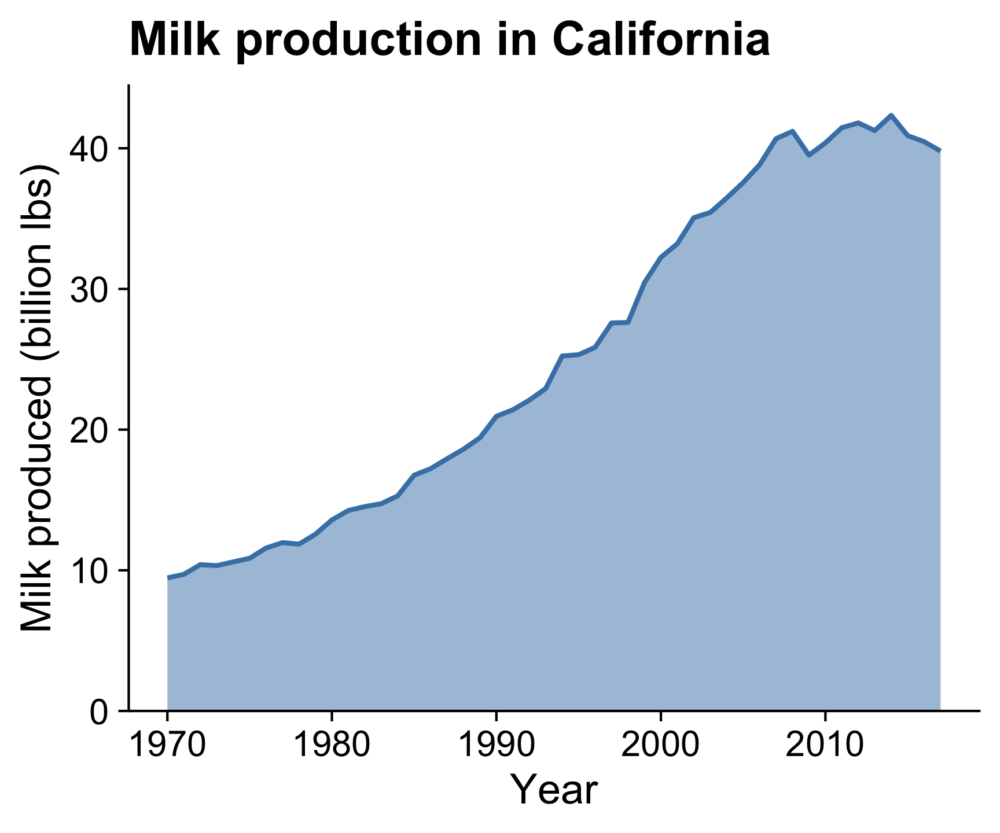
How to: Smoothed line + points
Use alpha to make points slightly transparent
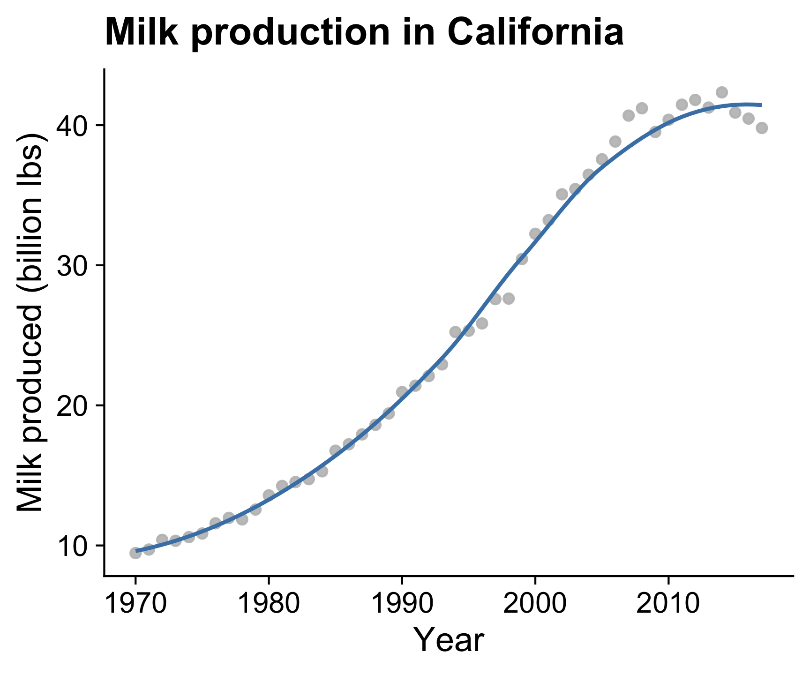
Your turn
Use the global_temps data frame to explore ways to visualize the change in average global temperatures.
Consider using:
- points
- lines
- areas
- smoothed lines
Week 10: Trends
1. Single Variables
2. Animations
3. Multiple Variables
Animation adds emphasis to the change over time
…plus it’s fun!
Static chart
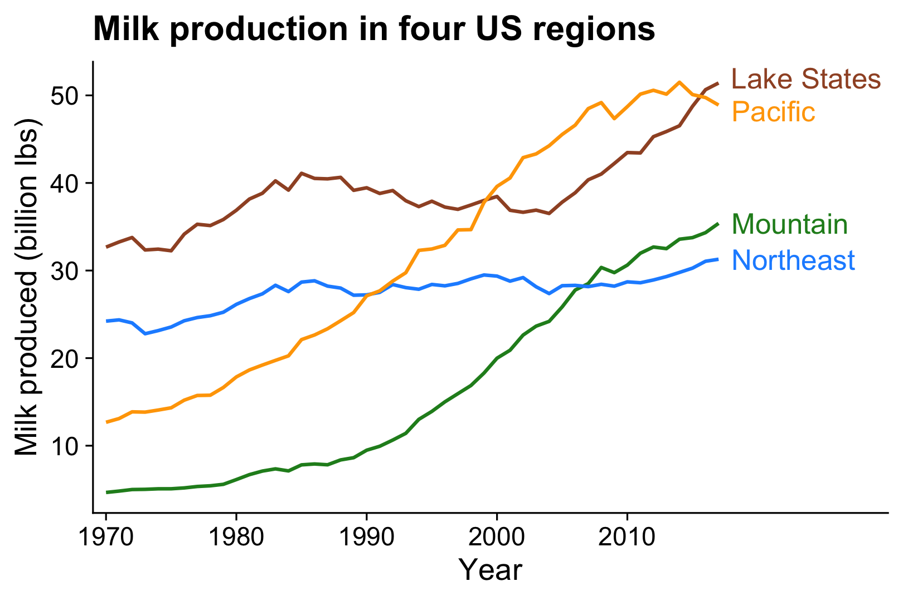
Animated chart
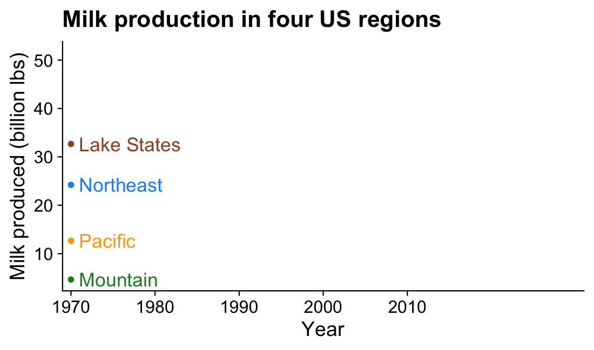
Animation is particularly helpful for the time dimension
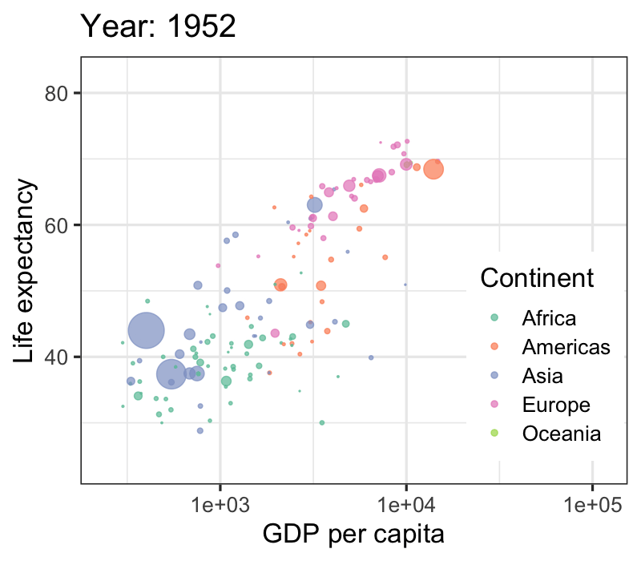
“Gapminder” visualization by Hans Rosling
Animation is particularly helpful for the time dimension

Source: https://www.climate-lab-book.ac.uk/spirals/
Animation is particularly helpful for the time dimension
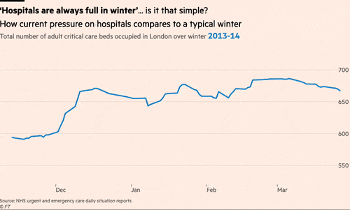
Financial Times comparison of Flu seasons to COVID-19
Animation is particularly helpful for the time dimension
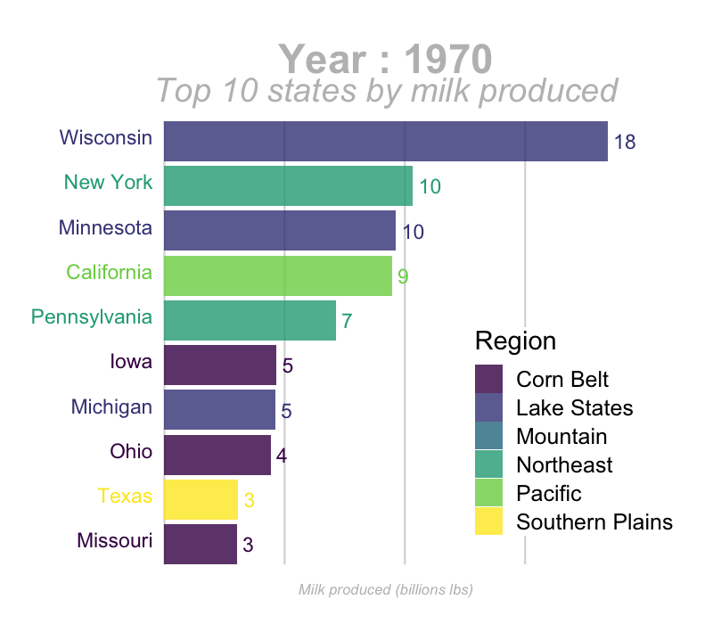
“Bar chart race” of top 10 milk producing states
How to: Animate a line plot
Make a static plot w/labels for each year
milk_region_anim_plot <- milk_region %>%
ggplot(
aes(x = year, y = milk_produced,
color = region)) +
geom_line(size = 1) +
geom_point(size = 2) +
geom_text_repel(
aes(label = region),
hjust = 0, nudge_x = 1, direction = "y",
size = 6, segment.color = NA) +
scale_x_continuous(
breaks = seq(1970, 2010, 10),
expand = expansion(add = c(1, 13))) +
scale_color_manual(values = c(
'sienna', 'forestgreen', 'dodgerblue', 'orange')) +
theme_half_open(font_size = 18) +
theme(legend.position = 'none') +
labs(x = 'Year',
y = 'Milk produced (billion lbs)',
title = 'Milk production in four US regions')
milk_region_anim_plot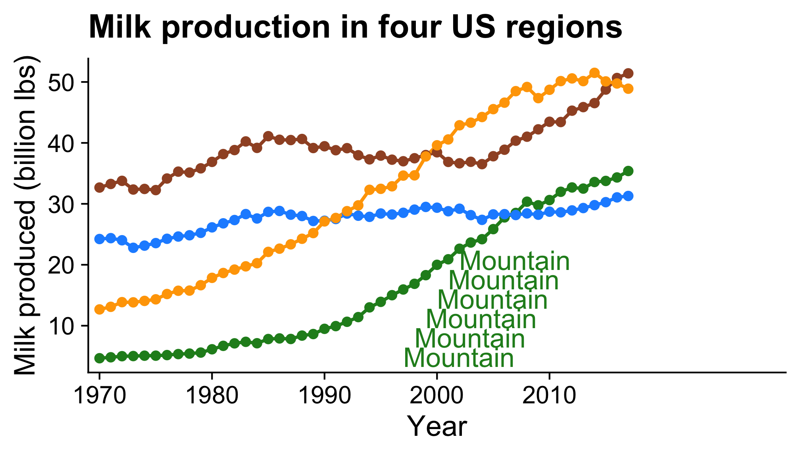
How to: Animate a line plot
Now animate it
Note the pause at the end!
library(gganimate)
milk_region_anim <- milk_region_anim_plot +
transition_reveal(year)
# Render the animation
animate(milk_region_anim,
end_pause = 15,
duration = 10,
width = 1100, height = 650, res = 150,
renderer = magick_renderer())
# Save last animation
anim_save(file.path(
'figs', 'milk_region_animation.gif'))How to: Change label based on year
First make a static plot
gapminder_anim_plot <- ggplot(gapminder,
aes(x = gdpPercap, y = lifeExp,
size = pop, color = continent)) +
geom_point(alpha = 0.7) +
scale_size_area(
guide = FALSE, max_size = 15) +
scale_color_brewer(palette = 'Set2') +
scale_x_log10() +
theme_bw(base_size = 18) +
theme(legend.position = c(0.85, 0.3)) +
labs(x = 'GDP per capita',
y = 'Life expectancy',
color = 'Continent')
gapminder_anim_plot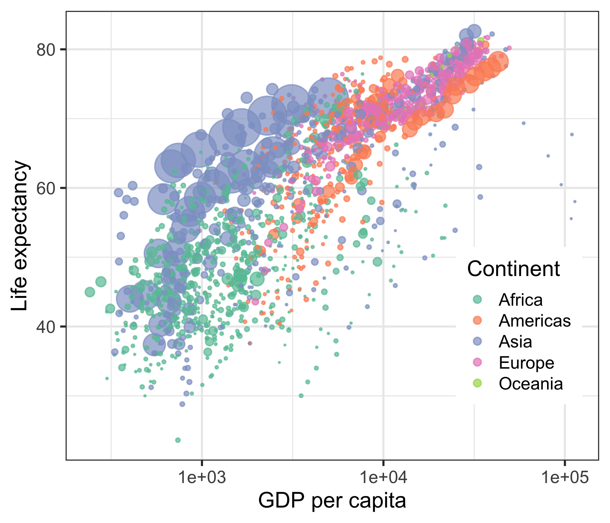
How to: Change label based on year
milk_race_anim <- milk_production %>%
group_by(year) %>%
mutate(
rank = rank(-milk_produced),
Value_rel = milk_produced / milk_produced[rank==1],
Value_lbl = paste0(' ', round(milk_produced))) %>%
group_by(state) %>%
filter(rank <= 10) %>%
ungroup() %>%
mutate(year = as.integer(year)) %>%
ggplot(aes(x = rank, group = state,
fill = region, color = region)) +
geom_tile(aes(y = milk_produced / 2,
height = milk_produced),
width = 0.9, alpha = 0.8, color = NA) +
geom_text(aes(y = 0, label = paste(state, " ")),
vjust = 0.2, hjust = 1) +
geom_text(aes(y = milk_produced, label = Value_lbl),
hjust = 0) +
coord_flip(clip = 'off', expand = FALSE) +
scale_y_continuous(labels = scales::comma) +
scale_fill_viridis(discrete = TRUE) +
scale_color_viridis(discrete = TRUE) +
scale_x_reverse() +
guides(color = FALSE) +
theme_minimal_vgrid() +
theme(
axis.line = element_blank(),
axis.text = element_blank(),
axis.ticks = element_blank(),
axis.title = element_blank(),
legend.position = c(0.7, 0.3),
legend.background = element_rect(fill = 'white'),
plot.title = element_text(
size = 22, hjust = 0.5, face = 'bold',
colour = 'grey', vjust = -1),
plot.subtitle = element_text(
size = 18, hjust = 0.5,
face = 'italic', color = 'grey'),
plot.caption = element_text(
size = 8, hjust = 0.5,
face = 'italic', color = 'grey'),
plot.margin = margin(0.5, 2, 0.5, 3, 'cm')) +
transition_time(year) +
view_follow(fixed_x = TRUE) +
labs(title = 'Year : {frame_time}',
subtitle = 'Top 10 states by milk produced',
fill = 'Region',
caption = 'Milk produced (billions lbs)')Resources
More animation options:
Your turn
Use the global_temps data frame to explore ways to animate the change in average global temperatures.
Consider using:
- points
- lines
- areas
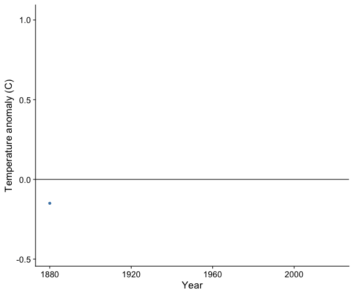
Break!
Stand up, Move around, Stretch!
Week 10: Trends
1. Single Variables
2. Animations
3. Multiple Variables
With multiple categories,
points & lines can get messy
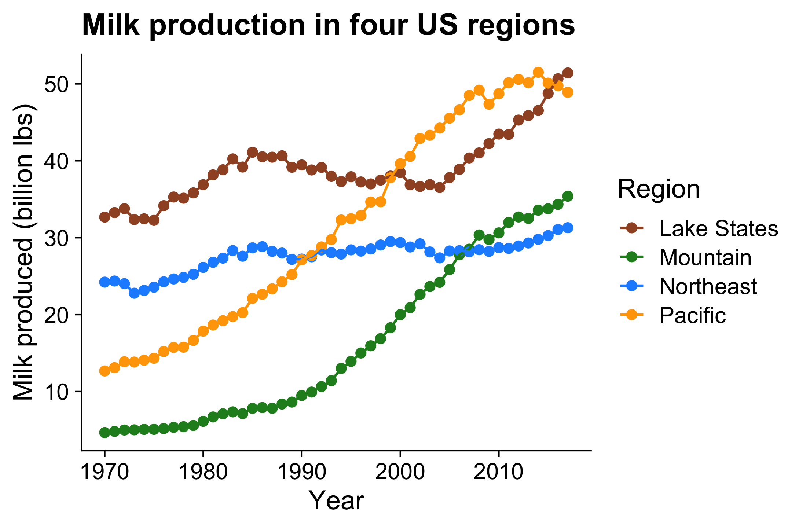
Better: Lines alone makes distinguishing trends easier
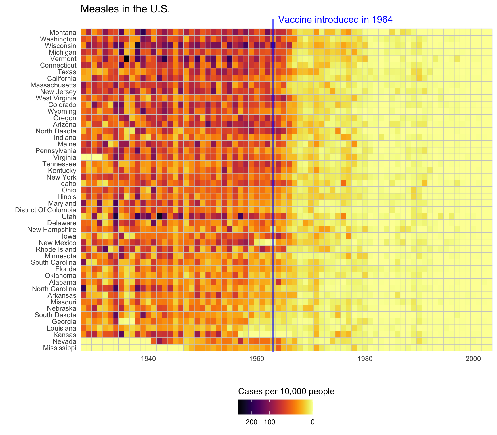
Even better: Directly label
lines to remove legend
lines to remove legend
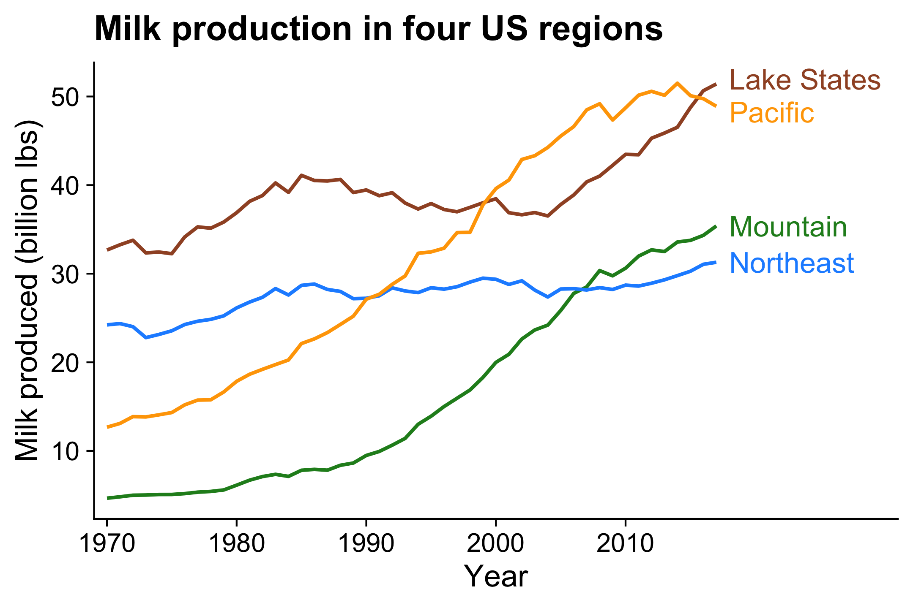
If goal is to communicate the overall / total trend,
consider a stacked area chart
Highlights regional trends
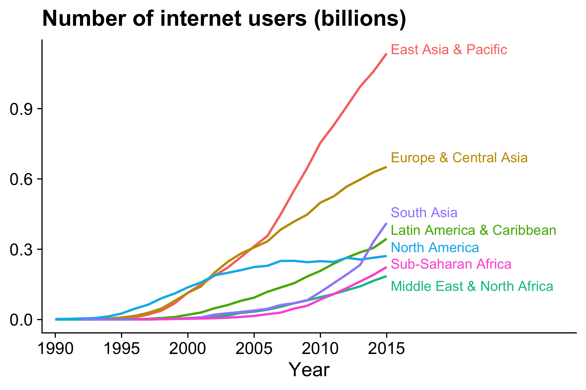
Highlights overall / total trend

If you have lots of categories:
1) Plot all the data with the average highlighted
Measles in California
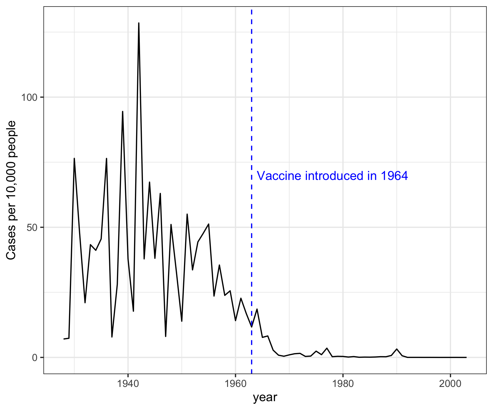
Measles in all 50 states

If you have lots of categories:
1) Plot all the data with the average highlighted
2) Plot all the data with a heat map
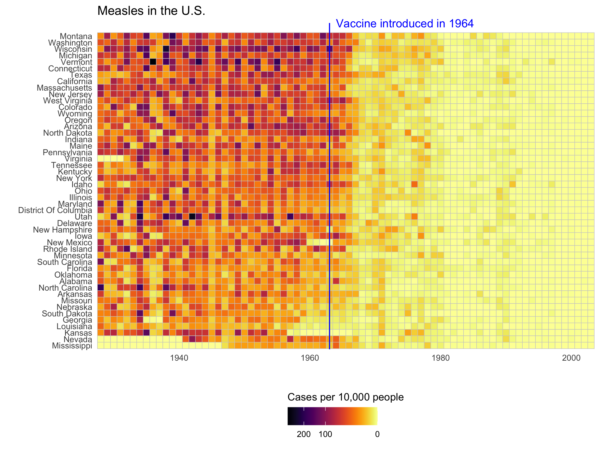
Heatmaps are great for multiple divisions of time
My activity on Github:
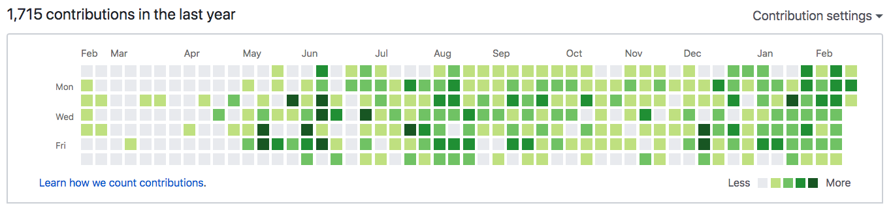
Check out this heat map on Traffic fatalities
Make the basic line chart first
# Format the data
milk_region <- milk_production %>%
filter(region %in% c(
'Pacific', 'Northeast', 'Lake States', 'Mountain')) %>%
group_by(year, region) %>%
summarise(milk_produced = sum(milk_produced)) %>%
ungroup()
# Make the line chart
ggplot(milk_region,
aes(x = year, y = milk_produced,
color = region)) +
geom_line(size = 1) +
scale_color_manual(values = c(
'sienna', 'forestgreen', 'dodgerblue', 'orange')) +
theme_half_open(font_size = 18) +
labs(
x = 'Year',
y = 'Milk produced (billion lbs)',
color = 'Region',
title = 'Milk production in four US regions')
How to:
Directly label lines
Directly label lines
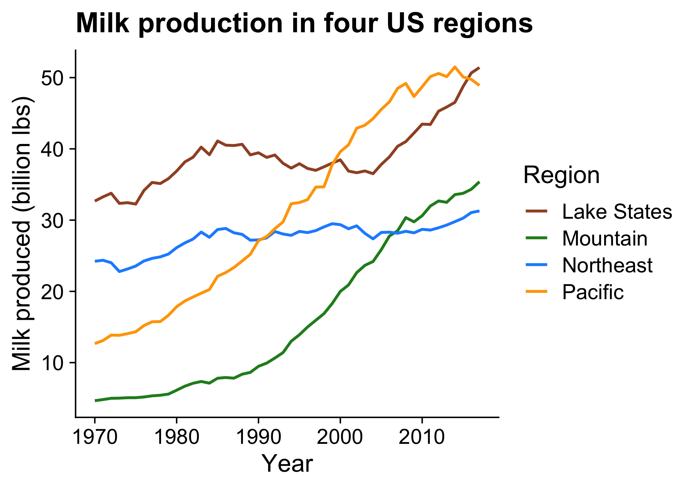
# Format the data
milk_region <- milk_production %>%
filter(region %in% c(
'Pacific', 'Northeast', 'Lake States', 'Mountain')) %>%
group_by(year, region) %>%
summarise(milk_produced = sum(milk_produced)) %>%
ungroup()
# Make the line plot
ggplot(milk_region,
aes(x = year, y = milk_produced,
color = region)) +
geom_line(size = 1) +
# Add labels
geom_text_repel(
data = milk_region %>%
filter(year == max(year)),
aes(label = region),
hjust = 0, nudge_x = 1, direction = "y",
size = 6, segment.color = NA) +
# Create space for labels on right side
scale_x_continuous(
breaks = seq(1970, 2010, 10),
expand = expansion(add = c(1, 13))) +
scale_color_manual(values = c(
'sienna', 'forestgreen', 'dodgerblue', 'orange')) +
theme_half_open(font_size = 18) +
# Remove legend
theme(legend.position = 'none') +
labs(x = 'Year',
y = 'Milk produced (billion lbs)',
title = 'Milk production in four US regions')
How to:
Directly label lines
Directly label lines

library(geomtextpath)
# Format the data
milk_production %>%
filter(region %in% c(
'Pacific', 'Northeast', 'Lake States', 'Mountain')) %>%
group_by(year, region) %>%
summarise(milk_produced = sum(milk_produced)) %>%
ungroup() %>%
# Make the line plot
ggplot() +
geom_textline(
aes(
x = year, y = milk_produced,
color = region, label = region, group = region),
size = 5, hjust = 0.15
) +
scale_color_manual(values = c(
'sienna', 'forestgreen', 'dodgerblue', 'orange')) +
theme_half_open(font_size = 18) +
# Remove legend
theme(legend.position = 'none') +
labs(x = 'Year',
y = 'Milk produced (billion lbs)',
title = 'Milk production in four US regions')
Alternative:
Embed the labels!
Embed the labels!
Use {geomtextpath} package
(see this SO issue for other strategies)
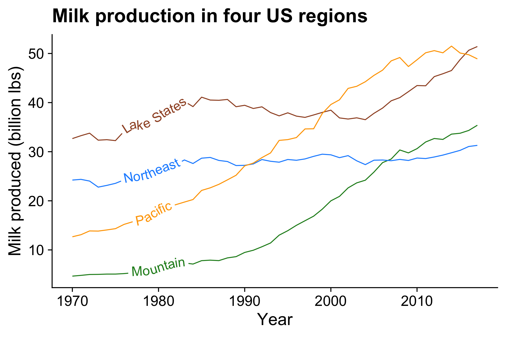
How to: Stacked area
internet_region %>%
mutate(numUsers = numUsers / 10^9) %>%
ggplot() +
geom_area(aes(x = year, y = numUsers,
fill = region)) +
# Nice colors from "viridis" library:
scale_fill_viridis(discrete = TRUE) +
# Sort the legend into 3 rows
guides(fill = guide_legend(
nrow = 3, byrow = FALSE)) +
theme_minimal_grid(font_size = 15) +
theme(legend.position = 'bottom') +
labs(
x = 'Year',
y = NULL,
fill = 'Region',
title = 'Number of internet users (billions)')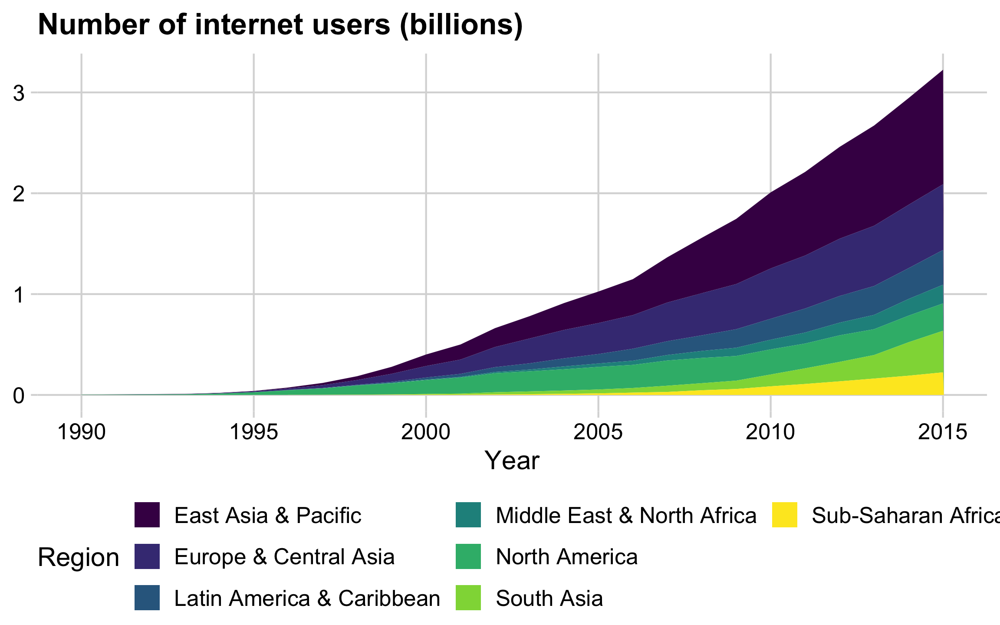
Format the data
# Format the data
measles <- us_diseases %>%
filter(
disease == 'Measles',
!state %in% c("Hawaii", "Alaska")) %>%
mutate(
rate = (count / population) * 10000,
state = fct_reorder(state, rate)) %>%
# Compute annual mean rate across all states
group_by(year) %>%
mutate(
mean_rate = sum(count) / sum(population) * 10000)Make all the state lines in light grey color
ggplot(measles) +
geom_line(aes(x = year, y = rate, group = state),
color = 'grey', alpha = 0.3) +
# Add reference line & label:
geom_vline(xintercept = 1963, col = 'blue',
linetype = 'dashed') +
annotate('text', x = 1964, y = 150, hjust = 0,
label = 'Vaccine introduced in 1964',
color = 'blue') +
theme_minimal_grid(font_size = 18) +
labs(y = 'Cases per 10,000 people')
How to:
Average line overlay
Average line overlay
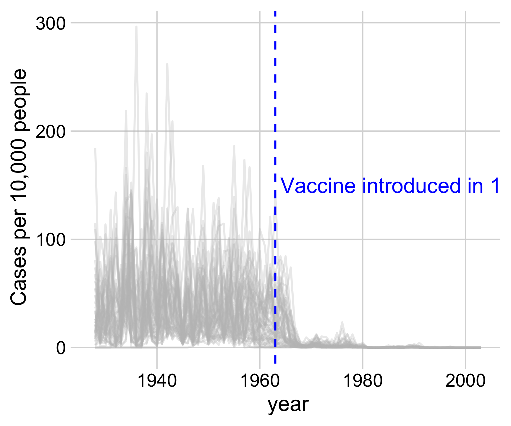
Now overlay the annual mean line
ggplot(measles) +
geom_line(
aes(x = year, y = rate, group = state),
color = 'grey', alpha = 0.3) +
geom_line(
aes(x = year, y = mean_rate), size = 0.8) +
# Add US mean label
annotate(
'text', x = 1945, y = 55, hjust = 0,
label = 'US Mean') +
# Add reference line & label
geom_vline(xintercept = 1963, col = 'blue',
linetype = 'dashed') +
annotate('text', x = 1964, y = 150, hjust = 0,
label = 'Vaccine introduced in 1964',
color = 'blue') +
theme_minimal_grid(font_size = 18) +
labs(y = 'Cases per 10,000 people')
How to:
Average line overlay
Average line overlay
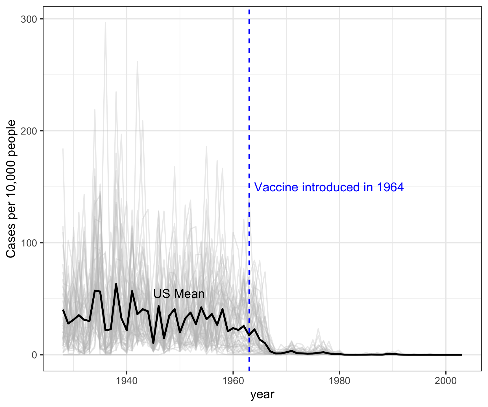
Create main grid with geom_tile()
How to: Heat map
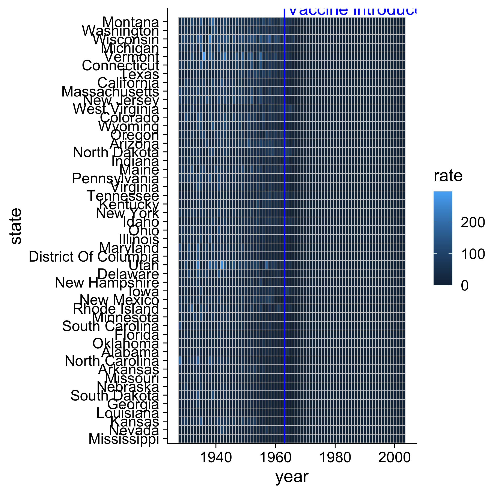
Adjust scales and adjust theme
ggplot(measles) +
geom_tile(aes(x = year, y = state, fill = rate),
color = 'grey80') +
# Add reference line & label
geom_vline(xintercept = 1963, col = 'blue') +
annotate(
'text', x = 1964, y = 50.5, hjust = 0,
label = 'Vaccine introduced in 1964',
color = 'blue') +
# Adjust scales
scale_x_continuous(expand = c(0, 0)) +
scale_fill_viridis(
option = 'inferno', direction = -1) +
# Adjust theme
theme_minimal() +
theme(
panel.grid = element_blank(),
legend.position = 'bottom',
text = element_text(size = 10)) +
coord_cartesian(clip = 'off') +
labs(
x = NULL, y = NULL,
fill = 'Cases per 10,000 people',
title = 'Measles')
Color scale is linear in this chart
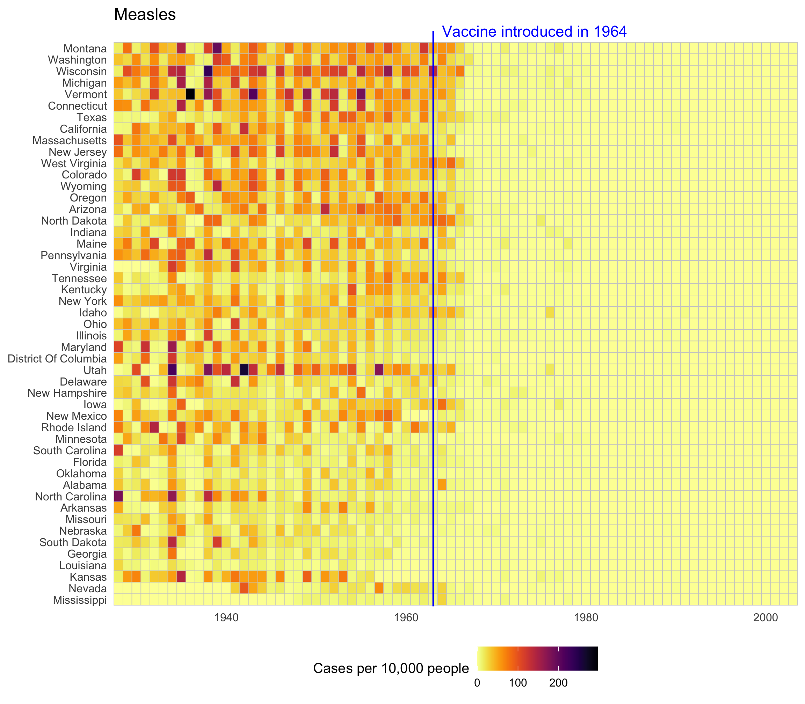
Adjust scales and adjust theme
ggplot(measles) +
geom_tile(aes(x = year, y = state, fill = rate),
color = 'grey80') +
# Add reference line & label
geom_vline(xintercept = 1963, col = 'blue') +
annotate(
'text', x = 1964, y = 50.5, hjust = 0,
label = 'Vaccine introduced in 1964',
color = 'blue') +
# Adjust scales
scale_x_continuous(expand = c(0, 0)) +
scale_fill_viridis(
option = 'inferno', direction = -1,
trans = 'sqrt') +
# Modify legend color bar
guides(fill = guide_colorbar(
title.position = 'top', reverse = TRUE)) +
# Adjust theme
theme_minimal() +
theme(
panel.grid = element_blank(),
legend.position = 'bottom',
text = element_text(size = 10)) +
coord_cartesian(clip = 'off') +
labs(
x = NULL, y = NULL,
fill = 'Cases per 10,000 people',
title = 'Measles')
Non-linear color scale
helps with large variations
helps with large variations
Your turn
Use the us_covid data frame to explore ways to visualize the number of daily cases using:
- A labeled line chart
- A stacked area chart
- A heat map
#> # A tibble: 6 × 7
#> date day state cases_daily deaths_daily cases_total deaths_total
#> <date> <dbl> <chr> <dbl> <dbl> <dbl> <dbl>
#> 1 2020-01-23 1 Alabama 0 0 0 0
#> 2 2020-01-24 2 Alabama 0 0 0 0
#> 3 2020-01-25 3 Alabama 0 0 0 0
#> 4 2020-01-26 4 Alabama 0 0 0 0
#> 5 2020-01-27 5 Alabama 0 0 0 0
#> 6 2020-01-28 6 Alabama 0 0 0 0Two other examples for showing
change across mutliple categories
Seasonal chart
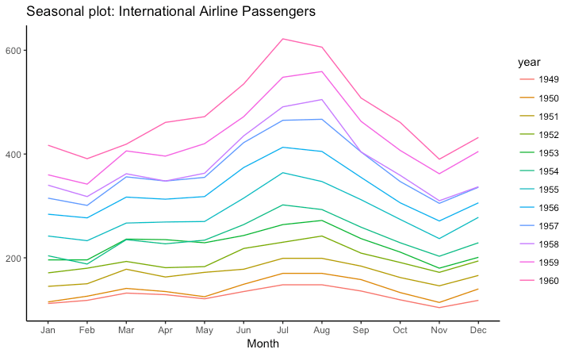
Source: http://r-statistics.co/Top50-Ggplot2-Visualizations-MasterList-R-Code.html#Seasonal%20Plot
Sankey chart
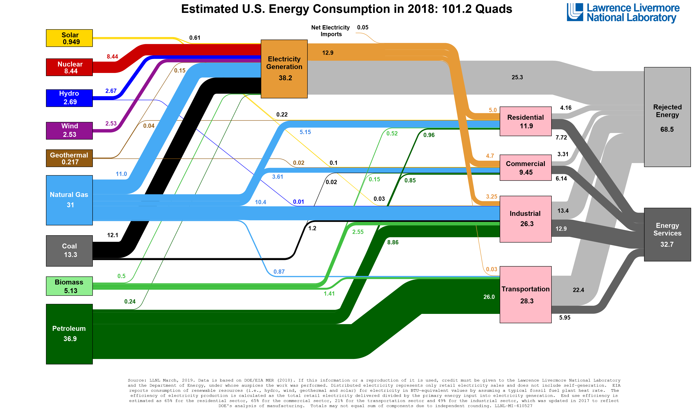
Source: https://flowcharts.llnl.gov/
Would you consider purchasing an electric car?
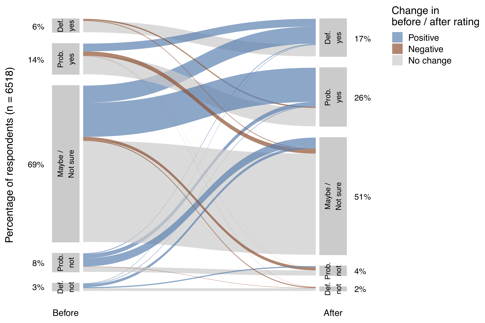
Roberson, Laura A. & Helveston, J.P. (2020) “Electric vehicle adoption: can short experiences lead to big change?,” Environmental Research Letters. 15(0940c3).
Made using the ggforce package